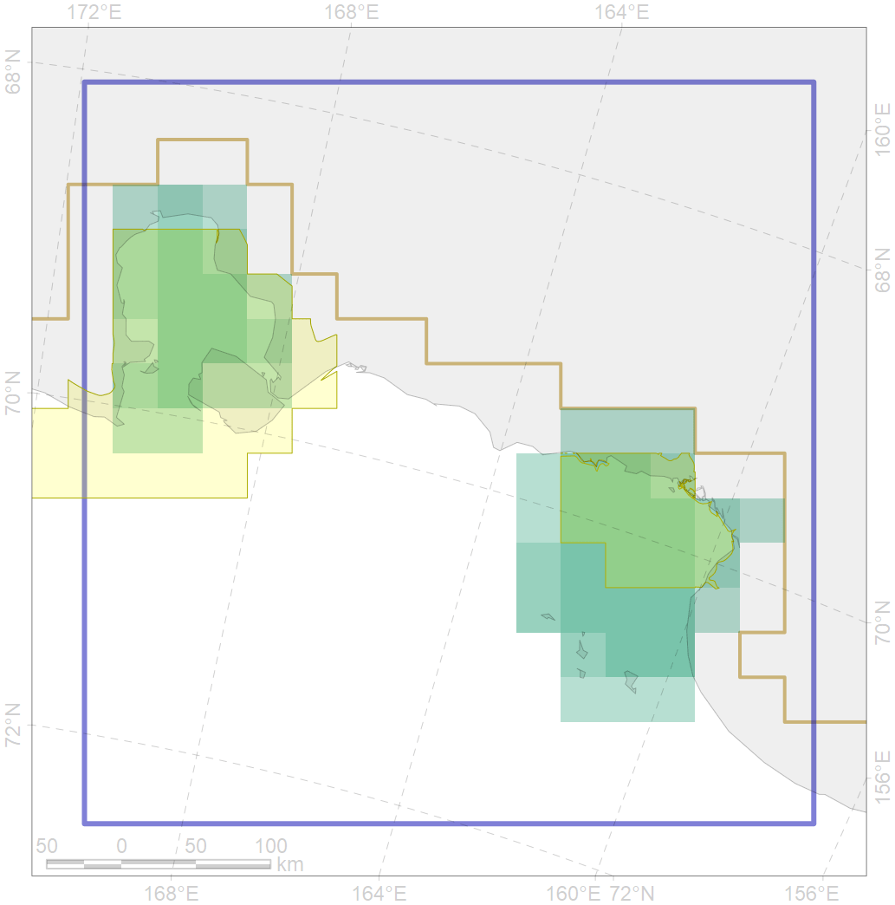
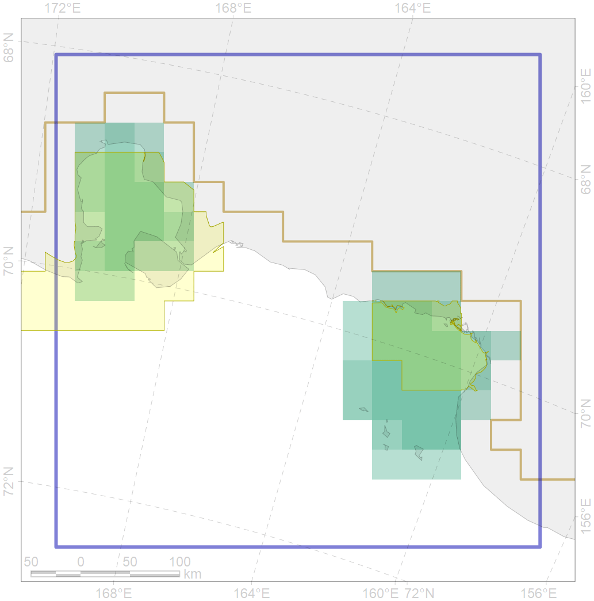

7012
 

| CF code | 7012 |
| CF name | East Siberian Sea Kolyma and Chaun refugia, enclaves of the boreal North Pacific fauna |
| Time Period | 1900-2010 |
| Source(s) | Petryashov et al., 2013 |
| Seasonality | 1-12 |
| Depth Horizon | Sea floor |
| Methodology | Boundaries were driven on the basis of literature |
| Use Restrictions | Open access |
| Author Name | V. Spiridonov |
| Notes | |
| Scenario’s Target | 0.4992977 |
| Target Achievement | 0.632 (Scenario: 126.5%) |
| PAC | Share of the Total Amount within the PAC | Share of the Target Achievement for the ArcNet | PAC’s Contribution to the Target Achievement |
|---|---|---|---|
| 8 | 35.2%35.3% | 65.5%65.7% | 51.8%51.9% |
| 9 | 29.7%32.4% | 37.8%39.0% | 29.9%30.8% |
| inner | 64.9%67.7% | 103.3%104.7% | 81.6%82.7% |
| outer | 35.1%63.6% | 23.2%66.7% | 18.4%52.7% |
| † supplement values are for area consistence whereas principal values are for Accenter compatible gridded stats |